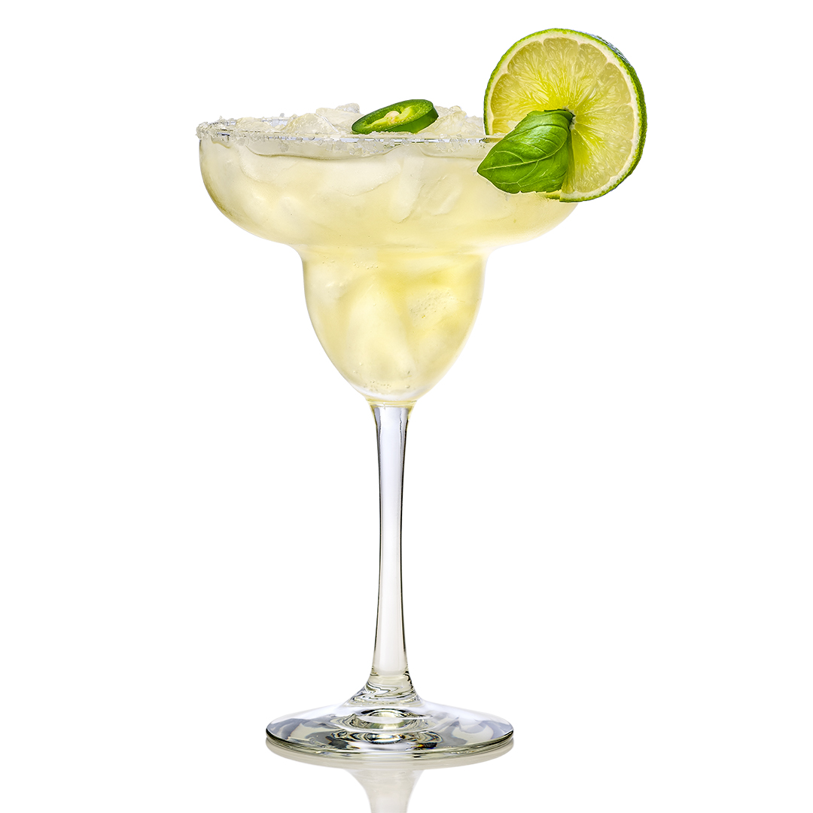

| ГЛАВНАЯ | Голубая лагуна | Зелёная фея | Том Коллинз | Пина Колада | Текила Санрайз |
|  |
Способ приготовления:
|
С происхождением этого коктейля связано самое большое количество версий, домыслов и легенд. А уж всевозможным Маргаритам, якобы вдохновившим барменов на создание бессмертного напитка, и вовсе нет числа.
С точки зрения технологии "Маргарита" – это усовершенствованная формула коктейля Brandy Crust 1862 года, по алгоритму которого построены многие более поздние знаменитые миксы: White Lady, Kamikadze, Side Car... В случае "Маргариты" усовершенствование касалось появления в составе коктейля лайма, а традиционный ободок из сахара стал соляным.
Но и тут "Маргарита" возникла не сразу: первый микс с текилой, лаймом и соляной корочкой был приведен в 1937 году в сборнике первого президента IBA Вильяма Дж. Тарлинга Café Royal Cocktail Book и назывался сугубо по- мужски – "Пикадор". И только в 1952 году коктейль появился в приложении к журналу Esquire под именем "Маргарита". Специальный бокал для коктейля, каким мы его сегодня знаем, возник позже самого напитка – первоначально "Маргариту" наливали в "шампанское блюдце". А своей формой Coupette Glass обязан вовсе не женской груди, а специальной посуде для подачи соуса гуакамоле.
Что касается коктейльной моды, то тут "Маргарита" всегда преображалась в угоду моменту. Так, в 1990-х была бешено популярна "замороженная" версия коктейля, приготовленная в блендере с дробленым льдом. А сегодня, в эпоху коктейльного пуризма, предпочтение отдается Tommys Margarita с нектаром из агавы вместо апельсинового ликера. Впервые эту версию представил Хулио Бермехо, совладелец известного в Сан-Франциско ресторана Tommys, оттуда и название. В финале имеет смысл отметить, что "Маргарита" – единственный коктейль, который имеет свой день в календаре. Во всяком случае любители жанра считают, что 22 февраля нужно поднимать бокал именно этого напитка.
К рецепту